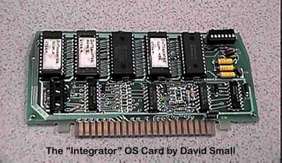

The "Integrator" OS Card

This OS card was a "Must Have"
for any Atari computer user who had a Corvus Hard
Disk System. It allowed the use of the Corvus with DOS'
other than Atari's own Corvus modified DOS 2.0d. Also you could
set the OS board so that it would boot directly from the Corvus hard disk
without the need for a floppy drive such as an Atari 810 connected to the
system. This was excellent for environments which large numbers
of Atari 800's using MUX's to connect to a single Corvus hard disk without
having to supply a floppy disk drive for each system.